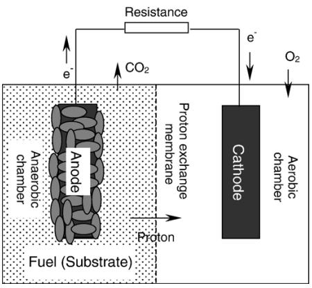
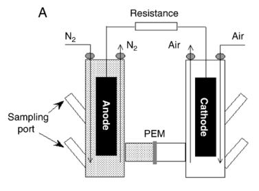
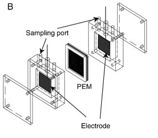
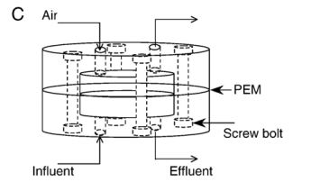
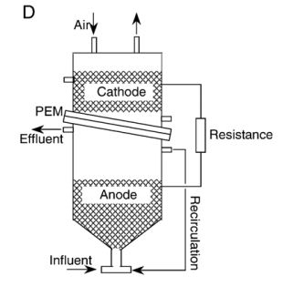
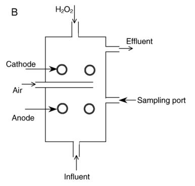
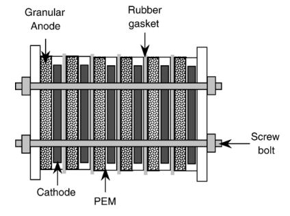

MFC components
 Fig. 1. Schematic diagramof a typical two-chamber MFC. A typical MFC consists of an anodic chamber and a cathodic chamber separated by a PEM as shown in Fig. 1. A one-compartment MFC eliminates the need for the cathodic chamber by exposing the cathode directly to the air. Table shows a summary of MFC components and the materials used to construct them.
Two-compartment MFC systems

Fig A. two-compartment MFC in cylindrical shape
Two-compartment MFCs are typically run in batch mode often with a chemically defined medium such as glucose or acetate solution to generate energy. They are currently used only in laboratories.

Fig B. two-compartment
MFC in Rectagular shape
A typical two-compartment MFC has an anodic chamber and a cathodic chamber connected by a PEM, or sometimes a salt bridge, to allow protons to move across to the cathode while blocking the diffusion of oxygen into the anode. The compartments can take various practical shapes. The schematic diagrams of five two compartment MFCs are shown in Figure A,B,C,D,E.

Fig C. two-compartment
MFC in miniature shape
The mini-MFC shown in Fig. C having a diameter of about 2 cm, but with a high volume power density was reported by Ringeisen et al. (2006).

Fig D. two-compartment MFC in
upflow configuration with
cylindrical shape
They can be useful in powering autonomous sensors for long-term operations in less accessible regions. Upflow mode MFCs as shown in Fig. D and E are more suitable for wastewater treatment because they are relatively easy to scale-up. On the other hand, fluid recirculation is used in both cases. The energy costs of pumping fluid around are much greater than their power outputs. Therefore, their primary function is not power generation, but rather wastewater treatment. The MFC design in Fig. E offers a low internal resistance of 4 ohm because the anode and cathode are in close proximity over a large PEM surface area.
Min and Logan (2004) designed a Flat Plate MFC (FPMFC) with only a single electrode/PEM assembly. Its compact configuration resembles that of a conven-tional chemical fuel cell.
A carbon-cloth cathode that was hot pressed to a Nafion PEM is in contact with a single sheet of carbon paper that serves as an anode to form an electrode/PEM assembly. The FPMFC with two non-conductive polycarbonate plates is bolted together. The PEM links the anodic and the cathodic chambers as shown in Fig. 5B. The anodic chamber can be fed with wastewater or other organic biomass and dry air can be pumped through the cathodic chamber without any liquid catholyte, both in a continuous flow mode.
Single-compartment MFC systems
Due to their complex designs, two-compartment MFCs are difficult to scale-up even though they can be operated in either batch or continuous mode. One-compartment MFCs offer simpler designs and cost savings. They typically possess only an anodic chamber without the requirement of aeration in a cathodic chamber. Park and Zeikus (2003) designed a one-compartment MFC consisting of an anode in a rectangular anode chamber coupled with a porous air- cathode that is exposed directly to the air as shown in Fig. 6A. Protons are transferred from the anolyte solution to the porous air-cathode. Liu and Logan (2004) designed an MFC consisting of an anode placed inside a plastic cylindrical chamber and a cathode placed outside. Fig. 6B shows the schematic of a laboratory prototype of the MFC bioreactor. The anode was made of carbon paper without wet proofing. The cathode was either a carbon electrode/ PEM assembly fabricated by bonding the PEM directly onto a flexible carbon-cloth electrode, or a stand alone rigid carbon paper without PEM. A tubular MFC system with an outer cathode and an inner anode using graphite granules is shown in Fig. 6C. In the absence of a cathodic chamber, catholyte is supplied to the cathode by dripping an electrolyte over the outer woven graphite mat to keep it from drying up. Rabaey et al. (2005b) pointed out that the use of sustainable, open-air cathodes is critical to practical implementation of such MFCs. Another type of SC-MFC reactor was reported byLiu et al. (2004). Their SC-MFC housed both the anode and the cathode in one chamber. It consisted of a single cylindrical Plexiglas chamber with eight graphite rods (anode) in a concentric arrangement surrounding a single cathode as shown in Fig. 7. A carbon/platinum catalyst/proton exchange membrane layer was fused to a plastic support tube to form the air-porous cathode in the center.
Up-flow mode MFC systems
Jang et al. (2004) provided another design of an MFC working in continuous flow mode. A Plexiglas cylinder was partitioned into two sections by glass wool and glass bead layers. These two sections served as anodic and cathodic chambers, respectively as shown in Figure.  Up-flow mode MFC systems The disk-shaped graphite felt anode and cathode were placed at the bottom and the top of the reactor, respectively. Figure shows another MFC design inspired by the same general idea shown in Figure but with a rectangular container and without a physical separation achieved by using glass wool and glass beads. The feed stream is supplied to the bottom of the anode and the effluent passes through the cathodic chamber and exits at the top continuously. There are no separate anolyte and catholyte. And the diffusion barriers between the anode and cathode provide a DO gradient for proper operation of the MFCs.
Stacked microbial fuel cell
A stacked MFC is shown in Figure for the investigation of performances of several MFCs connected in series and in parallel. Enhanced voltage or current output can be achieved by connecting several MFCs in series or in parallel. No obvious ad-verse effect on the maximum power output per MFC unit was observed. Coulombic efficiencies  Stacked microbial fuel cell (In fact it is not real Coulombic efficiency but Coulombic percent conversion. Coulombic efficiency describes how much of the electrons can be abstracted from the electron-rich substrates via the electrodes. It is not a measurement of electron transfer rate, while the authors described how much substrate was used for electricity generation before the stream flowed out of the MFCs or MFC stacks) differed greatly in the two arrangements with the parallel connection giving about an efficiency six times higher when both the series were operated at the same volumetric flow rate. The parallel-connected stack has higher short circuit current than the series connected stack. This means that higher maximum bioelectrochemical rection rate is allowed in the connection of MFCs in parallel than in series. Therefore to maximize Chemical Oxygen Demand (COD) removal, a parallel connection is preferred if the MFC units are not independently operated.